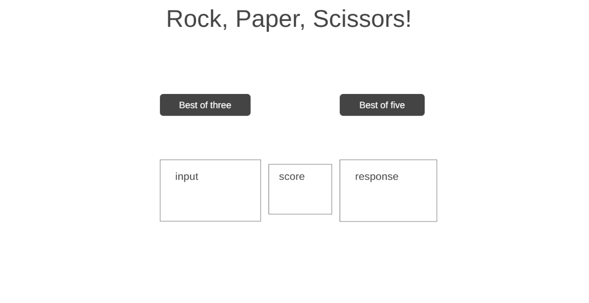
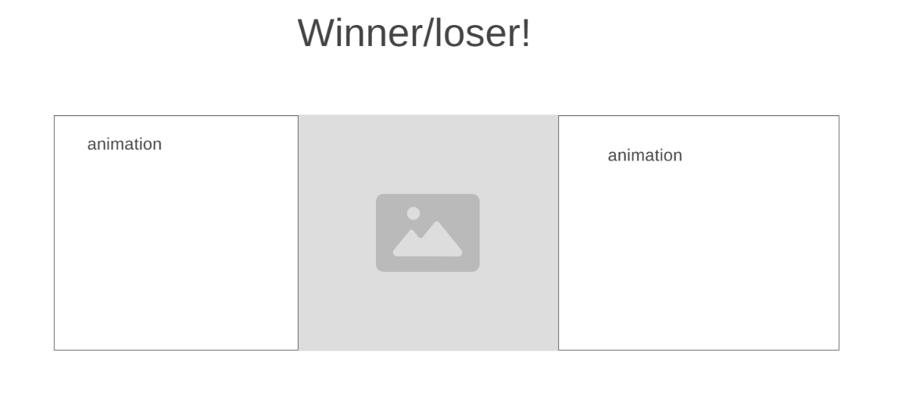

Overview
Purpose
Build a simple rock paper scissors game
Audience
Roommates and family
Dynamic elements
pick from best of 3 or 5. It will track player inputs, generate random responses, and track the score. Take player to an animated page after win/loss.
Branding
Rock, Paper, Scissors!
Style Guide
Color Palette
Palette URL: https://coolors.co/396e94-e7c24f-a43312-381d2a-aabd8c| Primary | Secondary | Accent | Accent |
|---|---|---|---|
| #242331 | #533E2D | #A27035 | #DDCA7D |
Pseudocode for your project
1. Event listeners for best of three or best of five buttons
2. Functions for best of three or five
2a. track player responses via buttons
2b. generate a random response, check against player response
2c. keep score and determine winner
3. Take player to winner or loser page based on outcome
3a. Animations based on winner/loser
Wireframes
Create wireframes for your project page(s). One for each page and list them here.
Landing page
[Any additional details about home that the wireframe does not make clear]

[Page 2 if needed]
[Any additional details about page 2 that the wireframe does not make clear]
